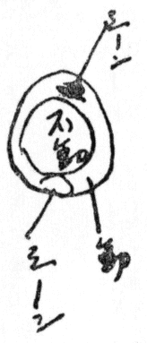
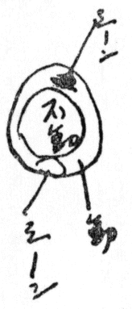
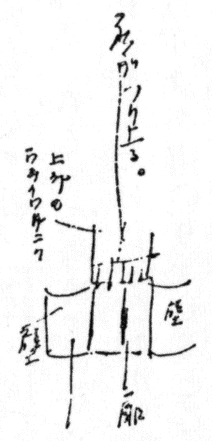
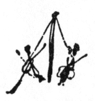
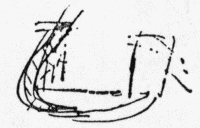
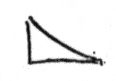
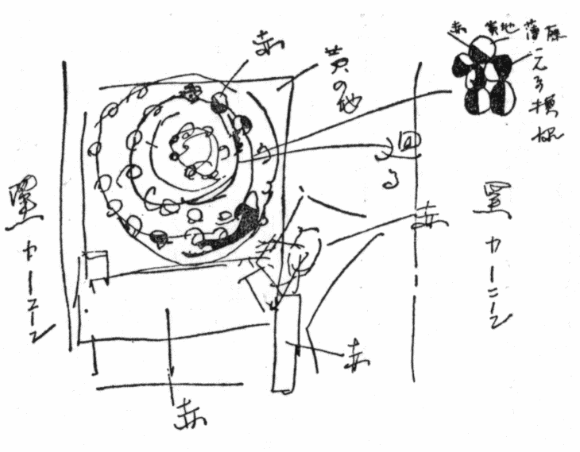
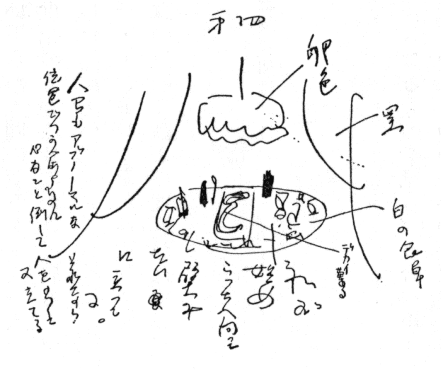
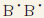

一、まわり舞台の一般的利用、
М・Х・А・Тの「復活」、全然日本のかえし。
メイエルホリド「バーニャ」或幅だけ円形線をとってそれをまわす。
上から見ると
革命座「パルトビレト」のは更に小規模な部分的作業でメイエルホリド「バーニャ」或幅だけ円形線をとってそれをまわす。
上から見ると
この壁がせり出して来て右へぐるりとまわると、かげからカルチーナ〔絵〕が出て来る。

問題
つり上り、（ワフタンゴフの例もある）まわりその他 дом печать〔出版の家〕でもやったがこういうセットの動かしかたと本当のメカニズムとの問題。自分は今ソヴェト劇のこの点に疑問がある。例えばメイエルホリドの「ウェリコドゥーシュヌイ・ラゴノーシェッツ」〔「寛大なコキュ」〕の風車はよく分る、がワフタンゴフの立ってるテーブルの意味がわかるか？
主題――テーマ――
一九二九年十二月二十九日
メイエルホリド劇場〔入場券、配役表貼付〕「森」
「「森」は云わば話し上手が、活々と、単純にノンセンスな、ユーモアと一種のリリシズムをもって女地主の家に起った話をして居るようだ。色彩がある、例えば月夜スチャストリーヴェツ〔仕合せ者〕（丸まっちくって極めてロシア式ルンペンである）と、花束をもって、まるで陶器人形みたいな紫花模様の服をつけた家政婦のウリタが「上ったり下ったり」にのっかって遊んで、幸福者がふわふわ裾のウリタを宙のりさせるところ。
ガルモシュカ［＃アコーデオン］をペートルが弾いて、感情を現し、若い二人が高揚した心持で庭のグルグル廻りにのってまわり、又ガルモシュカを弾く。非常に素朴で居て、まるで誇張はなく流露的な恋愛場面。

音（＝リズム）・運動のうまい動的な結びつけかた。例えば多くの音楽はただリリシズムの役にだけ立って、このように極めて内在的な感情リズムの表現には、これまでつかわれて居ない。
不幸な男が若い二人に同情して、よくばりの商人（恋人ペーチャの親爺）をバンバンいきなりトタンのなまこ板をふりまわしておどしつけ、とり上げた金を、おば・女地主にやったのを、又おばをおどしつけ（それのピストルのつかいかたが又極めて無邪気で、ノンセンスだ）金をとりあげて二人を一緒にしてやる。
最後の場面、ガルモシュカの音につれて若い二人が静かにこの高い橋＝人生の橋をのぼって去るところで幕になる。なかなかよい。

○これを見ると、メイエルホリドが決してレビゾールにあるような気の遠くなるような、肉感だけしか理解しない人間ではないことが分る。この恋愛の場面の単純な美しい健康なあつかいかたは、実にリズミカルで、集約的で、滅多にないよきラヴシーンと思った。ここ忘れがたい。舌づつみをうつような味だ。
これと、又、ウェリコドーシュヌイ・ラゴーシェッツにある妙に野生な、ブルータリズムみたいなもの。
一九三〇年一月二十日
ワフタンゴフ劇場〔入場券、配役表貼付〕「カ ールストヴ〔たくみ〕と恋」
ールストヴ〔たくみ〕と恋」
ワフタンゴフはいつも一つの癖をもって居る。（ポポーフという男のくせだ）それは奇麗ずきで、目先をかえたがってこせつくことだ。このシルレルの上演も部分的にはいいところがあるのにいやにセットを、ヨーロッパ・ハイカラにしようとして、変なメシチャンストヴォ〔小市民性〕に堕して居る。つまり銀ぴか、赤、立派、オモチャそういうところ、丁度版画で云うとドブジンスキーの夜の王子の插画みたいなところがあるのだ。聖ペテルブルグ気分、甘いロマンティック趣味がのこって居るのだ。ールストヴ〔たくみ〕と恋」始め、銀キラキラの真中に老コンダクターを出して一寸びっくりさせ、おわりに死んだ二人の若者を並べて又コンダクトするところなどいいメロドラマだ。
シルレルは権謀が無意味に二つの命をおとさせたという正義観でギリシア悲劇的にあつかって居る。ワフタンゴフは貴族＝貧しき音楽家というところに階級性を出したのだが、これは失敗だ。
一、ワフタンゴフとカーメルヌイ劇場とは現代のソヴェート劇壇で或傍道を歩きつつある二つの存在だ。＝カーメルヌイも、ワフタンゴフも、メイエルホリドでもなし、МХАТでもなし、М、ГСПСでもないところにある美を捕えようとしてやって居る。カーメルヌイは、例えばバクローヴィ・オーストロフのような軽い未来派タッチのあるオペレット、レビュー的のもので、ワフタンゴフはそれより重い、舒情、というようなところを狙って居るのだ。つまり建築的美を舞台の上にもつ現代の傾向と違った美＝絵画的印象＝そういうものを例えば騎士道と恋で捕えようとして居るが、それが困ることに一九〇七、八年どまりのハイカラーさなのだ。
二月二十五日
メイエルホリド劇場〔入場券、配役表貼付〕「寛大なるコキュ」
これは悲笑劇とあるが、悲哄笑劇だ。人間の嫉妬、やかれて本ものになる男女の心持。これ等を労働服のコスチューム、力学的メカニズム、動的感情表現として非常に効果的な粉挽場の風車、歯車等によって極めて明快に、痛快に演出して居る。（見物、笑う、笑う。）ここには「森」と又違う素朴さがある。「森」はなかなか曲線的優美だが、ここではあら木の樽のような別種の美がある、快感がある。感情をメカニックに動的に、肉体的に表現して行くところ、（云い表しがうまくないな）心理モノローグなどせず、主人公イリンスキーが笑劇の大道を踏みつづけて、女主人公が比較的リアリスティックに正面からやって居る。この釣合で演出に重みをつけて居る手際なかなかよい。こういう手際がワフタンゴフになると、こうゆかないでグサグサしてしまう。或は変なメロドラマにしてしまう。mass のつかいかたをなかなかメイエルホリドは考えて居る。
「リチ・キタイ［＃吼えろ、支那］」の場合、集団は或クレイムのために中心をもってこういう形にあつかわれて居る。（こっちの手法はもうすでにしばしばドイツのレジショール〔演出家〕によってもされて居る。）
この「ウェリコドゥーシュヌイ・ラゴノーシッツ」ではやはり十人足らずの人間が一時に舞台登場するが、これは全然ダイナミックに――つまり主人公にとっての、雑多な、それぞれな感情対象として、そのもの自身飛躍しつつある存在としての数を、力学的手法（メカニズム）によって表現して居るところ、力学メカニズムは単にフィジクリトゥーラ〔体操〕に止らざるところを示して居る。サイコロジカルに活かされて居て、力学的メカニズムが単にコムソモール［＃共産主義青年同盟］の塵立て運動ではなく活かされて居る。
○感情の動乱を示すとき静に段々つよく、いくつも重って風車が動き出したところ、ブラボー！ メイエルホリド！
三月十日
メイエルホリド座〔入場券、配役表を貼付〕「ウイストレル」〔「射撃」〕
これはヴェジミャンスキーの詩喜劇だ。が、メイエルホリド座の上演を見て居るより、革命劇場を見て居るような気がした。ここで活動を相当上手に説明的手段として使用して居る。М・Г・С・П・Сで「レリス・グジャット［＃レールが鳴り響く］」をやった。それとこれが違うところは、ここではウダールニクの出現とそれ等がインテリゲンチャとの階級争闘ではなくてビュロクラティズム［＃官僚主義］に反抗したところにある。そこに一九三〇年上演された理由がある。又実際ロシアのビュロクラティズムは大いに問題とするに足るものだ。が、これは筋が単調なところへ、詩で書いてあるから、何ていうか幕がしまうとヴェジミャンスキーがおでこが大きくて指が細くしなしなしたような受口の形で出て来て大いにリズミカルなる雄弁を振い、リテラトゥールヌイ・ポストー〔雑誌『文学哨所』〕が十ヵ月もこれについて沈黙を守って居たことに対して不平をのべ、大いに観衆諸君がロシアのビュロクラティズムに反抗すべくアジした。今日は『プラウダ』も『イズヴェスチア』も第一面に六十歳を迎えたリャザノフについて書いて居た。そのリャザーノフが第三列面位に来て居て、ヴェジミャンスキーが、舞台から祝辞をのべた。リャザーノフは低くシートの中へ沈んでしまった。皆がアップロジスメント〔拍手喝采〕をしてやまず。然しリャザーノフは立つ筈もないから、詩人氏が自分の云いたいことを始めた。
ヴェジミャンスキーが雄弁を振って居るとき不図見ると、白髯を垂れたリャザーノフがハンカチーフで禿をふいて居た。汗をかいたと思い自分微笑した。
（これはヴェジミャンスキーがウダールニクが十三しかなかったときに書いたのだと云った。その意味で歴史的なものだと。）
○これは見た当時とあとと印象が違った。あの晩はＹも大して面白いと云わぬし自分も不満だったが、一日二日たつとセクレタリーの姿（カリカチュアライズされた）、最後のマッスの形（セクレタリー排撃の）、白い紙が前後左右から降って来たビュラクラティスト地獄等、或感じをのこして居る。
○シネマを、革命劇場のように全面的（擬音を出した）につかわず、高く小さく出し（音楽で）てここでは効果があった。
これを見て居る時、隣りに何かで、どっかへ派遣される女と男が来て居る。男幕がしまると女の手をとって
――一日行くのをおのばしよ、私が彼方へ電報を打って上げるから
――いいえ、駄目！ 不可能なの
――お前一人じゃないじゃないか、何とかなるよ、ね、おのばしよ、一晩！
――駄目、絶対に駄目！
やって居る。
――○――
「ウイストレル」には現代工場内労働者の或タイプ、変なデカダンとフリガンストヴォ〔不良行為〕とビュロクラティストの、書いたものだけ書いて、しょぼしょぼして無気力なタイプ、よく現して居る。
〔日付なし〕
〔三月十三日――三日十九日の各劇場上演プログラム貼付〕が、最初いきなり出たときには何だか分らぬ。
モスク
の観衆は練馴されて居てその書いてない人物を、筋をよく理解するというのなら別だ、それなら万歳だ！三月十四日
ワフタンゴフ劇場〔入場券、配役表貼付〕「ナ・クロビ」〔「流血」〕
これは一九〇五年のレーニングラードとモスクに於ける革命を主題としたものだ。ワフタンゴフの上演目録中では成功して居る。テーマが皆に直接な問題だということが第一、第二は無駄な舞台装置の遊戯をして居ない。成功の原因は第二にある。始めソシャル・デモクラットとしての一体をなしてストライキを政治的反抗に導いたボルシェビキと
ヒメーラがアンドレイから盗んだ入場券で、ゲネラル〔将軍〕のところへテロリストが入り、ゲネラルを殺す。ポケットからアンドレイの名をかいた入場券が出る。追跡。アンドレイは逃げ、
その外、ピョートル・セルゲイヴィッチとムーシャの間に政治的意見の相異からもつれがあり、又革命につれて出入するうさん臭き分子も描出され、なかなか多くのものを十八カルティンにまとめようとして居る。
○手法は写実だ。
○コスチュームなどわざわざ一九〇五年を出して居る。女は長い裾を引ずり、大きな帽子をのっけ、
◎その時代の左翼労働者の調子が今と又違ってるところも面白い。今の労働者が四角い切石的感じだとすると、この時代の労働者は鋳鉄の黒いかたまりという工合だ。
印象にのこった舞台面は、モスク
のバリケード、地下室の秘密司令部それから、夜八時に会う秘密集会所
変な納屋の二階のようなところ。これはやや構成派的で
最後の労働者が線路工事をやってるところ、配置は平面的だが
夜でランプがこの場面にかげを濃くして悪くない。
然し幕切れは或弱さがある。もうちょっとはっきり句読点をうつ必要あり。
ワフタンゴフの女優はとても侯爵夫人などにはなれず。品のないことおびただし、ただ、極めて二流的に演技し、科白が面白いので皆よろこんで笑う。
◎ Ｙの文句、
今СССРでは見物がテクニーチスキー〔技術的〕に云って程度が低い。故に俳優はそこで人気を得るため、自分の特徴発見の途上で邪道に陥る――くさいことをやる、あくどい癖におちいる。その意味ではМХАТ正しい next generation の養成をやって居る。
Ｙの批評は正しい。○面白いことには今日開幕前薄色のセビロを着た男が幕の前に出て来て
「諸君、我々は五年計画の完全、社会主義社会建設のために多くの任務を持って居る。政府は多くの資金を要して居る。区貯金カッサ〔銀行〕とワフタンゴフ劇場はそれを助けることに決議した。諸君の空いて居る 一留 を政府にかせ。そして偉大な事業を完成させようではないか。劇場の内へ出張所をつくった。そこで詳細は知って下さい」
・
芝居のはねる十一時―十二時までの間。ボリシャーヤ・テアトルの横の角、コムナールの上ではイルミネーションが
ラボーチエ、習え、文字と新生活を ！
ゆっくり、ついたり消えたりした。
○辻馬車はかけねをし（八分以上のかけね）、クレームリの奥、番兵の立ってる入口のところでは電燈が煌々ついて居る。それは第二芸術座の舞台装置にやや似て居る。ラボーチエ、
ゆっくり、ついたり消えたりした。
昼間とけて泥濘って居た道は凍り、馬の踵が高く鳴り、時々
よごれた白い門壁に満員電車の影や馬車の影や、重って映り動いた。が、
月の下の電車停留場では、青い小さい灯が三つある。一本の架空線が時々水を流すように光る。
◎大劇場は紅と金との円天井の大籠だ。つみ上げて五階ある棧敷の第二階面のロッジの横から拡声ラッパの朝顔が二つ重って咲いて居る。
○廊下の天井に、やっぱり貯金カッサ〔窓口〕の広告提燈が下って居た。
その下を、頭をいがくりにした赤ルーシカの男、花模様のプラトークを頭からかぶった婆、外国 の（それ丈でモスク女には既に或感じを与えるところの）伯林 トリコを着た女などが歩いた。
◎ペトロフスカヤ・カッサは入ると、左右にガラス戸のある、右だ。ーシカの男、花模様のプラトークを頭からかぶった婆、女には既に或感じを与えるところの）ひどい人、人、人、
――
――
――だれがおしまいです？
――往来の上だ
押し合って立ってる。
一人の女が神経質な声で
――どうしてるんだろう！ そっちのカッサじゃ、だめなのかしら
――あっちはコンツェルトのカッサですよ
肥った男が答えてる。長靴だ。アストラハン帽をかぶってる
――ラーズベ〔ほんと？〕
すると男はふざけて
――貴女にコンツェルトの切符が御いりなんですか？
顔をのぞかれて女
――いいえ、いいえ
本気でニェート、ニェートと云った。
又永いこと立ってる。
前の人ごみの中から芝居で田舎婆さんの喋る、そっくりな歯のないフガフガした口つきで、大劇場の切符をきいてるのが聞える。
――あんな婆さんまで大劇場でオペラをきくんだ。――
――而も大劇場以外へはどこへもいかないってんだろう
こんなことを云ってる。
○大劇場横でピーイピーピー横長いゴム風船を売ってる。――サマ、イグラーユシチャヤ・カルバッサ！〔ソーセージ型のアドバルーンだよ！〕
この頃のモスクはカルッサも殆どなくて、カルッサというと特殊な笑いが出る位だ。三月十七日
第一国立オペラ舞踊劇場〔入場券、配役表貼付〕「アイーダ」
オペラがこのままでは過去のものと云う感深い。我々気が仕事に向ってグンとしてるとキノがよい。ずっとキノがよい。音楽もあって、歌もあってテムポもあるためにレビューの出来た心理的理由明白なり。
だがこの最後の幕はよかったし、全幕を通じ百人近くの合唱がすっかり統一した目的によって整理されて居るところはソビェートらしい特徴だ。オペラにつきものの、歌舞伎の並び人間的愚さを、ここでは脱してる。
三月十九日
ワフタンゴフ劇場〔入場券、配役表貼付〕「ザゴボル・チューフスト［＃感情の陰謀］」
一口に詰らぬとは云い切れぬ。が一体グラジュダニン・パポフ！〔パポフ君〕君はもう少し垢ぬけして、メカニックになって装飾なき美を理解しなくちゃたすからぬ。［＃感情の陰謀］」コンムニュストのアンドレイと兄のロマンチィスト・イ
ンとの間のカスティングボードとしてのカレーロフ。カ
レーロフ夢の場で、踊子花嫁みたいな白ふわふわのワーリャが出るのもアンドレイがブリキタイヤのつみ重りみたいになって出るのもよい。が、何故ワーリャを古風に――ノンセンスでも扱わず――天井から宙のりでおろして来なけりゃいけないのか？ いやに重くって気をつかってやって居て、見て居て気になる。メカニズムの感違いだ 悪夢の怪な、グロテスクなところ、テムポなしで念入れてやるからもう一息のところで観衆を捕えず。よかったのは第二の元インの居たひどい下宿、（そこへ始めてトラディション表徴である枕をかかえたロマンチカ〔ロマンチスト〕のイワンが英雄をさがして現れる）の装置は光線その他なかなかよかった。
悪夢の怪な、グロテスクなところ、テムポなしで念入れてやるからもう一息のところで観衆を捕えず。よかったのは第二の元インの居たひどい下宿、（そこへ始めてトラディション表徴である枕をかかえたロマンチカ〔ロマンチスト〕のイワンが英雄をさがして現れる）の装置は光線その他なかなかよかった。○カワレーロフは臥たままルーレット盤みたいなところを廻されるが、これも重くて知慧がない。感覚的でない。メイエルホリドの風車の効果はどうだった。効果は視る作業に過度な神経を消耗せぬところで生ずる。

ここ〔上図〕がメカニズムのカンチガイ場面だ。パッとカーテンがあく。奇麗なんだ。相当。カリカチュアライズされた後家女がギターをかかえて bed にかけて居た。

ここ〔前ページ下図〕でテーブルのまわりに坐って古い人々が小さい下らぬ人間の望みを一人一人云う。イワンが、ランプのように燃えよ、短く盛に燃えよ、古い十九世紀の人間は死にかけて居る。が生きて居る間は！ と叫ぶ。この場面
最後にこのクラブでカ
レーロフがーリシチ・アンドレイをかみそりで切りつけずに、インを追っかけて殺すところ。勿論イデオロギー第一課の説明ではよく理解が行くが、劇としての必然性が極めて稀薄で、何だか効果なし。三月二十五日
第一ГОТОБ〔第一国立歌劇舞踏劇場〕〔入場券、配役表貼付〕「ボリス・ゴドノフ」
三月二十六日
第一ソブキノ〔入場券貼付〕勿論、技術はまだ下手で、音楽も音がちっちまってだらしがないが、そのプログラムにしろ、
第一、パイプオルガンが出て来る。そしてインターナショナルを奏す。
第二、ルナチャルスキーのトーキーについての演説。
第三、冬。吹雪だ。野の上の、街の上の。
○擬音を出す。赤旗がちぎれそうにはためいて居る。レーニンの葬式のときの模様、それに音楽をつけ、弔砲の擬音もつけた。
「レーニンは死んだ。然し彼の仕事は」
それから工場だ。例によって迚もうまくとってある。そして、五年計画についてのボリシォーイ・テアトルのドクラードだ。（これはその男のドクラードがそのまま入ってる）「一九一九――二〇年我々のところでどんな光景があったか――。」饑饉、実にひどい様子がとってある。ドキュメントとしてのキノが最大の効果をもってる、レーニンの葬式と云い。（音楽がついてる）そして五年計画のために電化の必要、鉄道の延長、コルホーズその他、機械を主としてそれに合う音楽を入れ、ドクラードを入れ最後に「プロレターリー・フセフ・ストラン、ソエジェニャエチェシ」〔万国の労働者、団結せよ〕をいろんな国語でぐるぐる廻して地球にしてしまうところよろしい。
音の効果はわるいが、使いかたがいい。特に、海外ニュースにミリタリズムやキャピタリズムの映画にストーシュカ〔たたく音〕を入れたのなど、どうしてエイゼンシュテインのおかめとまけぬ皮肉さだ。
ソヴェートのつかいかただ。
ズブコヴィ・エクランと云うようなものだ。
自分これを見てトーキーをすっかり受容した。つまりブドフキンのそのように画の補充として随分よくつかえる。ズブコヴィ・エクランと云うようなものだ。
ソブキノの Hall はいつにない緊張ぶりだ。いよいよ白いフィルムがチラチラして、音がきこえようとするとき、女が、自分のうしろで
ストラーシュノ〔こわい〕
と囁いた。
この言葉、一般観衆の緊張した感覚をよく現して居る。
○ルナチャルスキーは、キノが最近の文化の所産であること、それが唯一の欠点（ニェドスタートク）に悩んで居た。それは巨大な唖（ウェリーキイ・ニェムイ）だった。それが、最近科学の進歩につれて人間的の叫びを再現することが出来た。キャピタリストの国とは全然違う意味に於て文化の武器、社会主義建設の武器として我々はこれを完成させようという意味を云った。
三月二十七日
М・Х・А・Т・第一「オセロ」〔入場券、配役表貼付〕オセロはヤニングスのオセロの方がずっとよかった。
三月二十八日
メイエルホリド劇場〔入場券、配役表貼付〕「風呂」
四月一日
М・Х・А・Т・第一〔入場券、配役表貼付〕「復活」
四月四日
「ラボーチャヤ・モスク」の倶楽部劇場〔入場券、配役表貼付〕「スパーチ・ニエ・ダユート」〔「眠らせてくれない」〕
印刷倶楽部の劇は去年も見たいと思って居てだめだった。Hotel の二階から見ると、クラブの廊下を人が歩いてるところまで見える。そこで、切符を七留も出して買って見たところ、倶楽部劇としてよくない。勿論ここはレビューなのだ。舞踊、ジャズ、唄、その間に反メシチャンストヴォ、五年計画に対するアジをやるのだが、最後に――まあ何だろう！ 何故眠らせないんだろう！
――
という active らしいことになるのだが、イデオロギーの点からも主人公夫婦の夢みるバラ色のメシチャニン社会主義の理想に批評が不鮮明で大したものではない。
四月九日
М・Х・А・Т・小舞台〔入場券、配役表貼付〕「伯父の夢」
チェホフは妻に送るになかなか面白い、いい手紙を書いた。それをよむと、クニッペルという芸術座の女優にも愛を感じる。
何しろ我々のところでは、Ｙがその書翰集を訳したのだからクニッペルも他人でないような気がしてるのだが、「桜の園」のラネフスカヤも大したことなし。どこでチェホフが惚れたのかしらと思った。この伯父の妻でクニッペルは、白い細そりした棒みたいに味のないジナイダ（カリョーノ
）の母親、薄馬鹿のクニャージに娘をやろうとするおふくろをやるのだが、上手い。実に地で行ってるように上手い。ここで初めてわかった。つまりクニッペルがチェホフと正反対の性格だったのでチェホフは惚れたのだと。筋はオストロフスキーもの〔数字不明〕ジナイダをモズグリャーコフが所望してる、伯父のクニャージが来る。それにおふくろ、娘をおっつけようとし、娘は小さい町から去りたいばかりにクニャージのところへゆくことに決心する。それを知ってモズグリャーコフが、クニャージのぼけたのを幸、夢ということにしてしまう。おふくろわいわいという。娘、クニャージの前にひざまずいてあやまるという――自分の潔白のために――もの。
四月十日
第一ГОТОБ〔入場券、配役表貼付〕「三つのアペルシン〔オレンジ〕恋」
ソヴェートの「五年計画」「社会主義競争」「チーストカ」は第一ГОТОБに最も必要だ。これが新オペラとして上演されるどんな価値があるのか。退屈な皇子がアーアー アアアア、アーア アアアアと歎息して居るところを魔女にささやかれて三つのアペルシンをさがしに出かけて、その中から出て来た女を得て安心してアーアーアーをやめるというきわめて非ソヴェート的なお伽噺を、光線、音楽その他で羅列するのだ。光線のつかいかた、天井から垂直線に一点に向って落ちる光線と、横から来る波状光線のつかいかただけは面白いし、アレゴリーにして、いろんなバケツや塵入れの大きいのを出し皆仮面を多くつかって居るなど、下らないところを目先でごまかしてるんだ。
パゾール！ パゾール
〔恥だ！ 恥だ〕四月十二日
クラブ・クフミステェロア〔入場券、配役表貼付〕「青襯衣 」
ソヴェート式レビューだな、一言で云えば。ソヴェート式であるという以上レビューは音楽、唄、踊とともに軍事知識、
家庭女性生活の改善、
アンティ・レリギォーズヌイ〔反宗教〕
ソヴェート労働生活批評
体育、
生産の振興、五年計画
に関する知識普及の内容をもって居る。
ビオメカニズム〔メイエルホリドが唱えた生物力学的演技法〕によって機械の動き、「ベルト」「車輪」など生しもするが大体はミミック〔顔面の作為的表情〕だ、普通の。シーニャヤ・ブルーザ〔青襯衣〕は、それが最初のそういう団体であること、どこまでもこのレビューで押してゆくべきところに意味がある。дом печать の Спать не Дают〔眠らせてくれない〕よりはさっぱりしててよい。
劇は、トラムにうけもたれるのが当然の帰趨だ。
四月十三日
第一、ГОТОБバレー「フットボーリスト」
新しきテーマとして、フットボーリストとコムソモールカ〔女子青年共産同盟員〕、メシチャニンとメシチャンカと組合わせはしたが、その組合わせかたが、プリンスのかわりにフットボーリスト
横恋慕をする武士のかわりにメシチャニンということになってるだけで、ちっとも新しい感情を出して居ない。
ただスタディオン〔スタジアム〕の前の往来で、いろんなもの売りが出て来て、巡査が来るとにげ出すところなどは現代風俗画として或興味はあった。しかしちっとも現代、未来の新鮮なソヴェートを感じさせるようなテクニックがない。コムソモールもコムソモールカも踊るのは古典的手法でまるで、Совет 的ならぬものだ。その終りに至っては話しにならぬ。五年計画で電力（＝水仕かけの滝を見せ）、石炭（＝焔色の男がとび廻る）、石油を見せたはよいが、五年計画は何で表現されるかと思うと、何だかいやに神秘的な色のヴェールをひるがえして、さながらニムフの如き女が五人で、極めて非生産作業的なくにゃくにゃ踊りをするのだ。愚劣極る。
フィジクリツーラ一点ばりでよいのではない。が、もう少し現代にならねばうそだ、その内的必然に於て。
四月十五日
革命劇場〔配役表貼付〕「パルトビレト」〔「党員証」〕
トレスト〔トラスト〕の支配人ソローキン。昔ののこりものの親爺、先妻、コンムニストカを離別して今は若いメシチャンカの浮気女ターニャと暮してる。ソローキンにはおかかえの技師が居る。それと二人でいいかげんをやってるのだが、本当の労働者たちは原料が工場にちゃんとなくて働けぬ。それでもんちゃくして居るとき、ソローキン、ドイツへ出かけようとして党切符を出し出国許可を貰おうとする。ところが同じクワルティーラにタワーリシチ・シャイキンなる男、革命時代、戦線で働いた勇士が居る。これがソローキンの私生活その他を党の区委員会に報告する。労働者の方からも苦情百出なので彼の党切符は委員会にさし押えられてしまう。
○工場では労働者の不平が高潮してストライキを起しそうになってる。一般集会をやってる。そこへ党の委員と支配人が出かけ、支配人、「俺が主人だ」なんぞとやって盛にヒューヒューやられる。いろんな人間がドクラードして、一般決議の結果、支配人排斥をやる。そして、彼が立身と便利のため持って居たパルトビレートはとりあげられ、若い浮気な女房は勝手に飛行機で外国へとんで行ってしまう。支配人はどうして生きるか？ とハンモンする。
そして最後に、シャイキンが出て来て
（ヒョロヒョロして、
「ボート〔ほら〕、これで革命が真直に行く！」
さあチェペリ、レボリュチア、イデォット、プリャーモ〔今や、革命はまっすぐに進む〕
と云って両手をやっこらと前に振って、幕。
このタワーリシチ・シャイキンという男が今到るところに居る。革命の完成を信じ、そのために一々うるさく、例えば、戸をたたかず入って来て
――一寸御免なさい、あなた便所へ行きましたか？
女、ぷりぷりして
――どうしてです
――電気がつけっぱなしです、我等は節約しなけりゃならないんだ。じゃ、となりをきいて見よう
出て行って、かえって来て
――失礼しました、便所へ電気をつけっぱなしにしたのは貴女じゃなかった。となりの女でした。
と云った風。この男が最後に出て来て結語を与えるのは一寸考えものだ。何故なら彼は常に箇人として舞台に現れ、滑稽な、間のぬけた、五月蠅いのが見物には可笑しがられて居るような人間が最後に決定的な文句を云うのはよくない。
レリス・グジャット以来インテリのコントル・レボリューチー〔反革命〕技師はまだソヴェートのタイプだ。
〔配役表貼付〕
この「鞄を持った男」は一九二八年の春昇氏と三人で始めて革命劇場を見た。「この鞄をもった男」［＃「「この鞄をもった男」」はママ］革命座の傑作の一なり。
四月十六日
オウデトリアム〔講堂〕、ポリテェフニーチェスキー博物館〔入場券貼付〕八時開会というのに自分たちファブリカ・クーフニャ〔調理工場〕を見たかえりなのでつかれ、九時二十分前に行った。それだのにまだ開いて居ない。盛にさいそくの拍手が聞える。
やっと始って司会者が四月十四日の朝自殺したマヤコフスキー追悼の為一同を起立させた。
「彼は大きい誤謬を犯した。しかし彼が彼の最終の日まで革命とプロレタリアの詩人としてつくした功績はその為に消えることはない」云々と云った。
それからセイフリナが、くるくるした体と眼とで出て来て短篇朗読をやった。が、散文の朗読というものはなかなかむずかしい。面白くない。美しくない。退屈だ。
大体詩人でも、モスク
の詩人たちより生彩がとぼしい。これは自分に興味を与えた。自分レーニングラードの生活を或程度まで知って居るので、猶その生彩なき理由をはっきり感じた。リビディンスキーがトルストフカのカフスに腕時計を光らして
「自分はまるで下手に読む。読むものもない。下らないから、質問してくれ。そしたらそれに答える」と云った。
質問は口頭でなく皆紙に書いて出す。
「英雄の出生」についての質問に答えリビディンスキーはソヴェートの新らしい家庭の意味というようなものの視点からそれを書いたと説明する。つまり、ソヴェートに於て、家族制度の問題や家庭内の男女同権の問題はもうすんで居る。男も女も同じものとして結合したところから発足して、子供を育てるということに家庭が持つ全然新しい意味を捕えようとしたという説明をした。その資本主義国での問題を通過したところから発足しようとしたということは面白いが、Ｙの話によると、作そのものは下らないんだそうだ。古い感情をコムミュニストが持って居たりして駄作だそうだ。
フェーディン、パプツチキ〔同伴者〕らしい気取った様子で、だが読むのは上手い。自作中から一つ。散文。
それから、マヤコフスキーがエセーニンの死に対して書いた詩をよんだ。これは折柄或印象を与えた。マヤコフスキーは時代が詩人にとって苦しきことを承認しながら、何とかなるのだ、生を肯定して居る、その詩では。
その彼自身が文学者クラブの広間の棺中に横わり、大きな肖像が、このオーデトリアムの正面ピアノの上に、レーニンの胸像の下、СССРの紋章の下にかざられて居る。
黒塗のグランドピアノの上に、В.В. Маяковский という文字がと逆さにうつってる。或感じだ。
古い女流作家フォルシュも黒装束に白髪で出て来て、諷刺短篇をよんだ。
アレクセイ・トルストイが太った体で自信ありげに出て来て腰かけて長くよんで居る。間に立って自分達そこを出て16にのってクードリンスカヤまでゆき、文学者クラブへ行った。マヤコフスキーの告別式が午前一時頃まであるというので出かけたのだ。
街角から人出だ。騎馬巡査が三人も警備して居る。歩道につらなってる列の後について居ると、忽ち最後だった自分達の後が又人で長くつながれた。
春のはじめで、薄ら寒い。夜空は白雲が多い。
列は動いて門内に入り、前庭をぐるりとうねって居る。正面柱列は十数流の黒赤の長旗で飾られて居る。
燈の明るい広間の窓越しに内部をそろそろ歩いて居る列が見える。
入口は狭く開いて居て赤衛兵が守ってる。
自分そろそろ列の中に立って歩き乍ら思った。マヤコフスキーは最大の誤謬をおかして死んだとしても、これだけにされる仕事をしたのだ。本望でなければならぬと。どうせ書く仕事をしに生れた以上、死んでこの位にはされたい。民衆にこれ丈の印象をのこす作家となりたい。
クラブの廊下にはアジサイや、その他の花の鉢が並べられて居る。プラカートが壁にはってある。「自分のすべての詩をお前に、争闘する階級に与える」そんな文句がある。
列は二列で右にまがると広間の左には空の椅子がいくつか並び、すぐ黒幕の前にマヤコフスキーが横わって居る。棺の左右には赤衛兵が一人ずつ侍立して居る。若い後輩らしい詩人が侍立して居る。
民衆はしずかに、しかし立ちどまらず棺の足許をまわって、彼方の扉から去る。
自分のところで列がきられて止った。棺から並んでマヤコフスキーの大きい靴の裏が目の前に見える。その靴の裏には爪先に裏皮のヘリ止金が打ってあった。ヘリ止め金は左手から棺に向って注がれて居る一台のプロジェクトル〔投光器〕の煌々たる光の下でよく光って居た。散々歩いて、モスク
の歩道ですり磨かれて、ヘリ止金は死んだマヤコフスキーの靴の裏で光ってる。彼は爪先がへるような歩き方をして生きて来たのだ。最後の日にモスクが与えた磨きがヘリ止金から消えぬうち、生活の中から苦しみ、生活の中で死んだのだ。棺から突出た靴裏の二つの小さいヘリ止金は彼の全生涯を彼の死顔より沈黙の内に声高く物語って居る。
辻馬車でホテルへかえった、一時半。
四月二十二日
メイエルホリド劇場〔入場券、配役表貼付〕「南京虫」
四月二十九日
メイエルホリド劇場に来た伯林労働劇団〔入場券、配役表貼付〕「ブント・ウ・ヴォスピターチェリノム・ドーメ」〔「養育院での反乱」〕
五月七日
ワフタンゴフ劇場〔入場券貼付〕「アンガリド」〔「前衛」〕
ンガリド」〔「前衛」〕五月二十五日
ストゥディア、マールイ・テアトル〔入場券貼付〕「罪なき罪人」
マチネーの「白」の総稽古五月三十一日
革命劇場に於けるレーニングラードТ・Р・А・М〔入場券貼付〕「ドルージュナヤ・ゴールカ」（コンムーナの名）オペレッタ
六月一日
マールイ劇場マチネー〔入場券貼付〕「家のもの！ 勘定しよう！」
作家クラブにリビディンスキーの「英雄の誕生」のための討論会があるというので出かけたところ、何もなし。燈がまばらについた片明りのザール〔ホール〕にソコールニクのライオンヌイ・リトクルジョークの連中が来て居た。ちょいちょい話し、出かけて、アルバートで、見そこなって居た「
しかし一つ、そのテムポのおそさが土の重量を後味としてのこす効果には役立って居る。大体「土」の作者ドブジェンコは土とその土から生ずるもの、土と密接なるもののもつ盲目な力感というものに興味をもって居る、そこに美をするどく感じて居る。そして新らしき社会主義の意識、トラクター、ドクラード、古きものが新しさにかわろうとする時の犠牲者の死にもかかわらず、残る印象はただ土の重さ、土の上に生きる人間の心持の重さ、土の生みの力の無心なる豊饒さで、人間の意志の勝利ではない。イデオロギーによる土への新たな耕作でもない。ここがこの作者のもって居る一つの非ソヴェート的なるものだ。
六月四日
第二芸術座〔入場券、配役表貼付〕「チュダーク」（変りもの）
六月九日
第一ГОТОБ「ローヘングリーン」
六月十日
МХАТ小舞台〔入場券貼付〕「ナーシャ・モーロドスチ」〔「われらの青春」〕
革命当時の党青年の心持（若さの揺れ、その愛すべきところ、決然たるところ）、生活気分を非常によく客観的に表現した、近頃面白い芝居だった。これはブロニポエズドなどとはまるで違った態度で、革命という大きな歴史的背景の前に活きる若い党員の生きかたを、立体的に把握している。
×演出も要領よくなかなかうまい。ダンチェンコだ。役者もうまい。
×チュダークが書かれたこともソヴェート文学の一つの注目すべきことだし、この「我等青春」が描かれたことも興味ある現象だ。
革命のただ中からの報告、記録が、或客観性を年月によって加えられ、同時に、その時は大きな波にのって見落した小さいものが、効果的に、歴史的意味をもって拾いあげられて来ている。
これは最近の新しい現象だ。
六月十七日
第二芸術座 グルジア第一国立ドラマ劇場（オリムピアードに来た。）〔配役表貼付〕「ラマーラ」（女の名）
十月十二日
革命座〔入場券貼付〕「第一騎兵隊」
十月十八日
〔入場券貼付〕「デカブリスト」
ひどい古フィルムだ。その上撮りかた下手。（大したことない平凡だ）ただこの時代の運動と民衆との関係を、観衆のイディオロギーによって理解するとき興味がある。画そのものとしては乙下。
〔日付なし〕
〔入場券貼付〕「焔の航行」
リベリアのボルシェビキの活動をとったもの。相当面白かった。党員が白につかまる。ころされかける。逃げる。百姓に助けられる。船にのる。その船に妻がゴルニーチナヤ〔女中〕になってのってる。男の子がある。
シュピオン〔スパイ〕がその男の本性を見やぶらせようとして男の子と不意に対面さす。男の子は母の云いつけでよく知らん顔し終せる（！）男、うまく船からにげ、宣伝文を船のボーイにたのんどく。船が「赤」をうちに到着した時船員反抗する、オフィチアント〔給仕〕が先に立って武器をとって。「赤」はかつ。
「とりかたに大した奇なし。」
「赤」「白」のでは、来たばかりのとき見た「二日」すぐれたものの一つだったと今も思う。
〔日付なし〕
〔映画館「チャールイ」の入場券貼付〕外国旅行に出る前、Ｙがもっと小さい室に居た時、自分病院から出て居候。Ｙが一人で仕事したいとき自分からふらふら出かけて、ここで性病に関する知識普及フィルムを見た。
◎ソヴェート文芸に於けるプロレタリア・リアリズム、画のプロレタリア・リアリズムと劇に於けるその問題。
○テーマの歴史的発展ということ。
◎事件の表現に役立った登場人物が歴史的タイプの表現に進んだところ、
◎生産との関係の進歩はどうか。
「ウイストレル」の中のフリガン、
支配人タイプ、アメリカの民間人、コムソモールカ（不良的
○タ
ーリシチ・シャイキン○「インガ」の中の婆
○女労働者
○労働者のよきタイプ
・コルホーズに於ける会計、ソロバン少しまぬけ、２＋２。めがね。そそっかしや、忘れっぽさ
○クラーク
・坊主
○音楽なき芝居は非常に減った。
この傾向
そしてその批判材料としての
メイエルホリド┌レース
└
ワフタンゴフ ザーゴボル・チューフスト
劇に於ける
日本の音楽のつかいかた。とここ（立体）のつかいかた。
横の線
メロディ的
それがキノ（何が彼女）に現れる。文学のままだ。
横へ横へのばして行く。
○
◎日本での上演脚本としてのソヴェート戯曲。
日本に於ける現段階との客観的考察。
◎わかる劇、わからせる劇の問題。
◎大衆劇。（日本に於ては反対）演劇スタディオンが必要になって来た時代だ。例えば※［＃ローマ数字16、623-16］全ソヴェート同盟大会のとき Сад クリトールィ・イ・オッドイハで、С・Е・ラドポフがモスク市中各区の工場、クラブのクルジョーク員を大衆的につかって、（デモンストラーションで）生産のインダストリアリゼーション、集団化、第二「СССРの護り」を演出したような。
市中各区の工場、クラブのクルジョーク員を大衆的につかって、（デモンストラーションで）生産のインダストリアリゼーション、集団化、第二「СССРの護り」を演出したような。